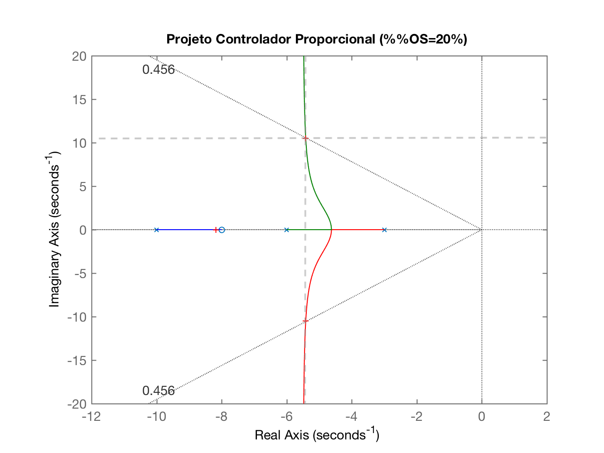
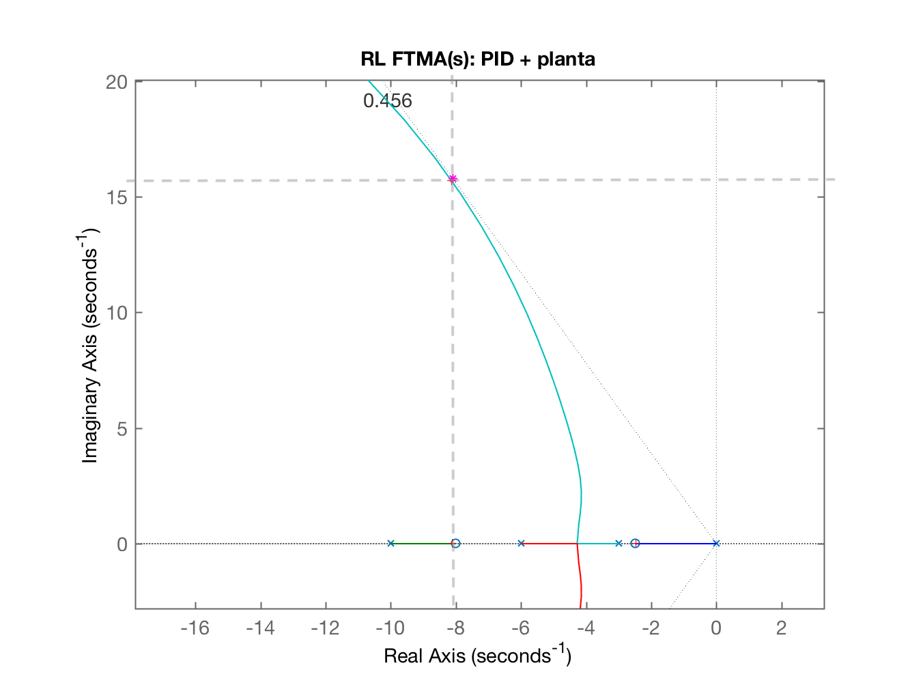

Baseado no examplo 9.5 de "Nise, Norman S., Control System Engineering, 6th ed. 2011, John Wiley & Sons, Inc.”:
Examplo 9.5: Projetar um controlador PID para que o sistema abaixo opere com tempo de pico 2/3 menor que o sistema não compensado (K=?) com 20% de sobresinal e erro nulo para entrada degrau. Seja o sistema:
Solução: NISE segue a seguinte abordagem para projetos de PID usando Root Locus:
Usando o script example_9_5.m proposto pelo mesmo, temos:
x
>> help example_9_5 Example 9.4 (pag. 483) Este script resolve o exemplo 9.5: PID Controller Design, do livro: Nise, Norman S., Control System Engineering, 6th ed. 2011, John Wiley & Sons, Inc. Exige que o usuario edite as primeiras linhas contendo as variaveis 'num' e 'den' referentes a funcao transferencia da planta para a qual esta' sendo projetado o PID Note que seguindo o exemplo 9.5; primeiro e' realizado o projeto do Controlador Proporcional para ter acesso ao tempo de pico do mesmo. Este valor e' reduzido entao em 2/3 para o projeto do PID O restante do programa com excessao das variaveis 'num' e 'den' e' interativo. Varias janela graficas de RL serao abertas, o usuario deve realizar o zoom na regiao de interesse, orientado pelas mensagens geradas por este script durante sua execucao.>> example_9_5Este script resolve o exemplo 9.5:PID Controller Design, do livro:Nise, Norman S., Control System Engineering,6th ed. 2011, John Wiley & Sons, Inc.Planta a ser compensada:ans = (s+8) ------------------ (s+10) (s+6) (s+3) Continuous-time zero/pole/gain model.Maximo percentual overshoot tolerado (%OS): ? 20Fator de amortecimento (zeta): 0.4559Observe o RL da FTMA(s) do Contr. Prop. + Planta...Realize um zoom sobre a area de interesse epressione qualquer tecla para continuar O script realiza uma pausa no RL mostrando o RL da planta para sintonia (determinação do ganho) do Controlador Proporcional:

A idéia neste ponto é selecionar o ponto de intersecção da linha guia do () com o RL traçado para esta planta (conforme ressaltado pelas linhas tracejadas acima). Na sequência temos:
x
Select a point in the graphics windowselected_point = -5.4149 +10.5227ik = 120.5291poles = -5.4148 +10.5227i -5.4148 -10.5227i -8.1703 + 0.0000iEstimando tempo de assentamento, t_s: 0.7387Estimando tempo do pico, t_p: 0.2986Novo tempo de tipo (desejado), t_p: 0.1990theta (cos(zeta)): 62.8739^o180^o-theta: 117.1261^oPolos de MF desejados em: s = -8.0861 +j15.7840Contribuicoes angulares dos polos do sistema em malha-aberta:p(1) = -10 --> 83.0865^op(2) = -6 --> 97.5291^op(3) = -3 --> 107.8607^oSoma das contribuicoes dos polos: 288.4763^oContribuicoes angulares dos zero do sistema em malha-aberta:z(1) = -8 --> 90.3127^oSomatorio total das contribuicoes angulares (polos e zeros): 198.1636^oAngulo resultante para o zero do PD: 18.1636^oPosicao do zero do PD: em s = -40.0243Equacao do PD (variavel "c"):ans = (s+40.02) Continuous-time zero/pole/gain model.Levantando RL da FTMA(s) do sistema com o PD...Observe o RL da FTMA(s) do PD + planta (Figure 4)...Realize um zoom sobre a area de interesse epressione qualquer tecla para continuar E temos neste ponto as seguintes janelas gráficas:
| Figura 2: | Figura 3: |
|---|---|
Aumentando a região mostrada neste RL percebemos: |
E mais a última janela aberta: "RL da FTMA(s) do PD + planta (Figure 4)...”:
Onde a idéia é concentrar o zoom na região de interesse para definir o ganho do PD:
Continuando a execução do script temos:
xxxxxxxxxxSelect a point in the graphics windowselected_point = -9.4724 +15.7973iK_pd = 7.9981poles_pd = -9.4593 +15.8042i -9.4593 -15.8042i -8.0794 + 0.0000iEquacao do PD:ans = 7.9981 (s+40.02) Continuous-time zero/pole/gain model.Selecione uma posicao para o zero do PI (em: -3 <= s < 0) [-0.5]: ? Colocando zero do PI o mais próximo possível do pólo mais lento do sistema (em ), teremos:
x
Selecione uma posicao para o zero do PI (em: -3 <= s < 0) [-0.5]: ? -2.5Equacao final do PID (ainda sem ganho):ans = (s+40.02) (s+2.5) ----------------- s Continuous-time zero/pole/gain model.FTMA(s) do PID + Planta (variavel "PIDg"): ans = (s+40.02) (s+8) (s+2.5) ----------------------- s (s+10) (s+6) (s+3) Continuous-time zero/pole/gain model.Observe o RL da FTMA(s) do PID + planta (Figure 6)...Realize um zoom sobre a area de interesse epressione qualquer tecla para continuar Até este ponto é gerada a janela gráfica (Figure 5):
Notamos que o PD permitiu alcançar (e o objetivo era: ).
E ficamos parados na seguinte janela gráfica (Figure 6):
Onde o script espera que se realize um zoom a fim de “sintoniar” (determinar) o ganho que será adotado para o PID:

Continuando a execução do script temos:
x
Select a point in the graphics windowselected_point = -8.1251 +15.7104ik_PIDg = 7.8645poles_PIDg = -8.1340 +15.7060i -8.1340 -15.7060i -8.1175 + 0.0000i -2.4790 + 0.0000iEquacao final (completa) do PID (variaval "PID2"):PID2 = 7.864 s^2 + 334.4 s + 786.9 --------------------------- s Continuous-time transfer function.Kp = 334.4315Ki = 786.9258Kd = 7.8645>> E ainda é gerada a última figura (Figure 7):
Notamos que o PID final ultrapassou um pouco o desejado (), mas atendeu ao . Uma redução conveniente no ganho geral do PD(*) permite manter o dentro do patamar desejado:
x
>> zpk(PID)ans = (s+40.02) (s+2.5) ----------------- s Continuous-time zero/pole/gain model.>> k_PIDgk_PIDg = 7.8645>> ftmf_PID=feedback(5*PID*g, 1);>> figure; step(ftmf_PID)>> stepinfo(ftmf_PID)ans = struct with fields: RiseTime: 0.1029 SettlingTime: 0.5742 SettlingMin: 0.9285 SettlingMax: 1.1964 Overshoot: 19.6357 Undershoot: 0 Peak: 1.1964 PeakTime: 0.2208>> (*) Note que este ganho está diretamente associado com o ganho da ação Derivativa ().
E temos a figura final:
Fim.
Fernando Passold, em 14.06.2021